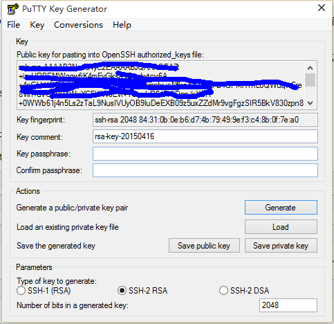
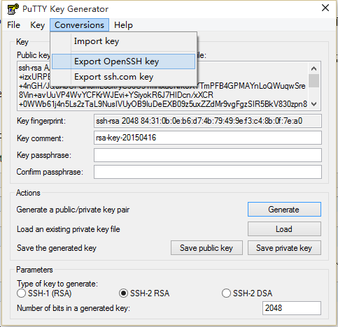
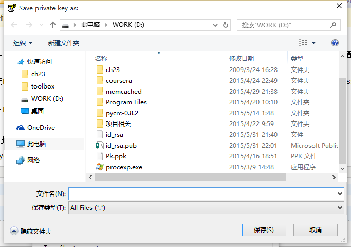
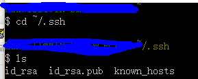
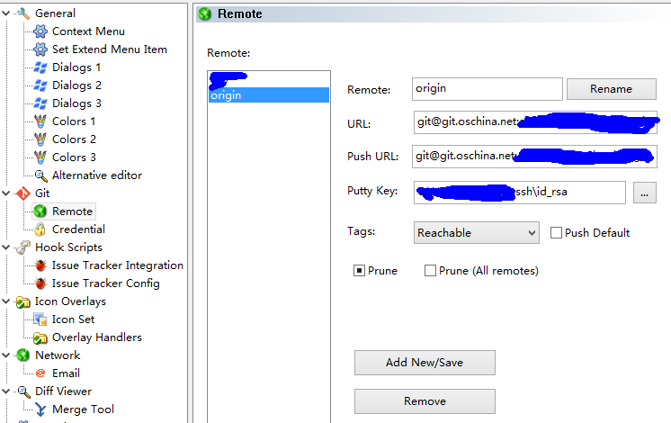

在git与tortoisegit中使用openSSH与PuTTY
问题
在使用Git与tortoisegit的时候，指定远程版本库的地址有2种方式：
- 使用https方式的git地址非常直接（https://xxx.oschina.net/xxx.git），基本上什么都不需要配置，不管是git bash还是tortoisegit都能完美使用，但是每次需要连接远程服务器时，都要提示我输入用户名与密码，非常不爽；
- 使用ssh方式的git地址非常爽快（git@git.oschina.net:xxxx/xxx.git），不需要输入密码，但是需要配置。
第一种方式没啥说的，第二种方式的应用，我配置的时候出现了一个问题：
配置了tortoisegit的putty后，直接用tortoisegit可以不输入密码直接完成操作；但是当我使用git bash的时候，使用git pull之类的命令还需要我输入密码...
P.S. 别说我闲的，有tortoisegit为啥还用git bash。实际上，使用git bash在有的操作上还是挺方便的（比如删除分支 git push origin :branchx）。
那怎么弄才能让这2个小家伙都不输入密码呢？
这里又有两种办法...
- 调整tortoisegit的settings中的network选项，将tortoisegitplink.exe改成git安装目录的下bin\ssh.exe。如果先前用ssh–keygen.exe配置好了git下的ssh话，改完就能直接用，没配置好的话...等下说。
- 默认安装tortoisegit，会使用PuTTY（plink）作为默认的ssh方式，声称对windows集成更好，如果不想改这种方式的话，就只能让git的ssh.exe使用PuTTY的密钥了，tortoisegit继续使用PuTTY。
注意：tortoisegit可以自动载入putty key，使用puttygen程序可以生成对应的公钥与私钥。
解决方法
我先前已经配置好了PuTTY，只是bash中的openssh不能用，于是我采用第二种方式。公钥是相同的，需要转换一下私钥。
定位putty的ppk文件，用puttygen（在tortoisegit目录里面）打开（conversions>import key）

然后点击conversions>export openSSH key,保存文件为id_rsa文件，不要拓展名。

然后再点击下面的save public key按钮，保存为id_rsa.pub文件，效果如下：

找到自己%home%下（˜）的.ssh文件夹，一般windows 7以后的在c:\用户\“自己的用户名”下面。没有的话，可以新建。
把刚才的两个文件扔进去。打开git bash，执行命令，如下图。

跳转到自己的版本路径，执行git pull，命令行再也不提示密码了...再试试tortoisegit，依然也不提示要密码。
这样实际相当于配置了一回git的ssh，让openSSH与putty使用相同的密钥，git bash使用openssh连接，而tortoisegit使用PuTTY连接，谁也不碍着谁。
实践指南
依据自己的喜好，为了不重复输入用户名与密码，可以选择 兼用PuTTY与OpenSSH 或者 只用openSSH
*兼用openSSH与PuTTY*
1.配置tortoisegit的PuTTY： http://my.oschina.net/longxuu/blog/141699
2.确认tortoisegit可以正常使用PuTTY，可以按照上面解决方法的步骤配置openSSH以供git bash使用。
*只用openSSH*
1.使用git bash，输入ssh–keygen.exe –t rsa –C “自己的email”
2.如果不想输密码的话，一路回车，程序会自动生成.ssh/下面的id_rsa和对应的pub文件
3.打开id_rsa.pub文件，将内容全部复制
4.在版本控制的网站（例如oschina），在个人资料里面，SSH公钥，新添一个公钥，将刚刚的东西贴进去。
5.可以参照 http://git.oschina.net/oschina/git–osc/wikis/%E5%B8%AE%E5%8A%A9#ssh–keys 进行验证
6.调整tortoisegit的settings中的network选项，将tortoisegitplink.exe改成git安装目录的下bin\ssh.exe。
7.在对应项目的文件夹上右键，点击tortoisegit下的settings，定位到remote
8.修改对应的url为SSH地址，putty key定位到id_rsa文件，如下图

9.测试tortoisegit，没有错误，则大功告成˜